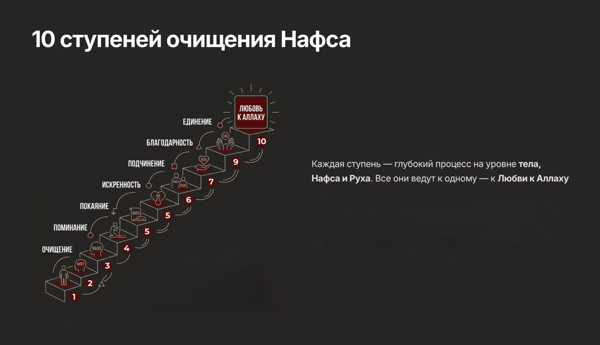
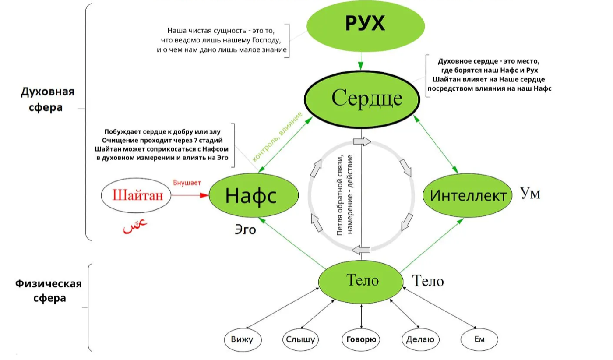

Абдур-Рахман ибн Ауф.
Напомню: он приехал в Медину ни с чем.
- Без ничего в кармане — только одежда у него была.
Большинство людей думают, он добился этого потому, что был особенным.
Но ранние мусульмане — сахабы — все жили именно так. У них был такой Ризык, который большинство из нас сегодня даже представить не может.
Не потому что они работали усерднее.
А потому что они знали кое-что особенное — как правильно очищать своё ЭГО через Тазкию. И тогда Аллах давал и обильные деньги, и реализацию своего потенциала, и душевный покой, и счастливые отношения.
👇 итак — ТАЗКИЯ — это процесс очищения Нафса.
Очищение Нафса приводит к Любви к Аллаху ﷻ.
А Любовь к Аллаху ﷻ — это успех обоих миров!!!
Разные исламские учёные подходят к Тазкие по-разному. Сравнив 8 разных методов, я остановилась на методе доктора Хайфы Юнус — потому что у неё «женский» метод.
В основном учителя Тазкии — это мужчины. НО мужчины и женщины устроены АБСОЛЮТНО по-разному: когда женщина применяет мужские методы, она страдает, потому что у неё другой гормональный цикл и эмоциональная глубина.
👇 Доктор Хайфа Юнус 13 лет уже преподаёт именно женскую Тазкию в Jannah Institute.
🪑 Существует 10 ступеней очищения Нафса. Присаживайтесь, будем углубляться в 3 из них.

Любовь к Аллаху
Это цель всего духовного пути в этой жизни. Как я и прежде говорила, чтобы дойти до ступени «Любовь к Аллаху», нужно пройти остальные 9 ступеней очищения Нафса. Все остальные ступени — это ступени, ведущие к любви. Они подготовительные.
Каждая ступень важна и необходима. Но сама лестница и духовные стоянки существуют только для того, чтобы ты добрался до верхней площадки — «Любовь к Аллаху».
Один человек спросил Пророка ﷺ о Часе (Дне Суда). Пророк ﷺ спросил его: «А что ты приготовил для него?» Человек ответил: «О Посланник Аллаха, я не приготовил для него много молитв или поста. Но я люблю Аллаха и Его Посланника». Тогда Пророк ﷺ сказал: «Человек будет с теми, кого он любит. И ты будешь с теми, кого любишь».
Это перекликается со словами исламских учёных (таких как Ибн Таймия), которые говорили:
«В этом мире есть рай. Кто не войдёт в него здесь — не войдёт в Рай в следующей жизни»
💛 Без любви к Аллаху религия становится ритуалом, списком правил. Обязанностью, которую несёшь через силу.
История Камилы
Камила верила в Аллаха и старалась поклоняться Ему, но её отношения с Аллахом строились в основном на страхе наказания, а не на любви и близости.
Всю любовь, которую она хотела получать от Аллаха, она старалась выпросить у мужа.
Каждый раз, когда муж отказывал или делал не так — она разочаровывалась. И убеждалась ещё раз в том, во что давно верила: «Он меня не любит. Потому что я недостойна любви».
При этом в сердце у неё было искреннее желание изменить это состояние. Камила хотела:
- чувствовать любовь к Аллаху, чувствовать, что Любима Им, и служить из Любви к Нему
- в отношениях с мужем — чувствовать себя нужной и любимой
Как мы решили её проблему
Многие не знают, что любовь к Аллаху очень тесно связана с любовью к себе. И так же мало кто знает, что отношения с мужем напрямую связаны с тем, как человек относится к самому себе.
Потому что:
Ты не можешь искренне почувствовать любовь Аллаха, если внутри есть непринятие себя, а непринятие себя — это как спор со Всевышним и претензия к Нему.
Но давайте здесь немного остановимся, чтобы понять одну важную вещь.
Когда мы говорим «любить себя» — понимаем ли мы, кто есть «мы»? Запад смотрит на любовь к себе только со стороны тела.
Но Ислам доказывает, что мы БОЛЬШЕ, чем просто тело. Согласно исламским учёным, мы состоим из 5 компонентов (Рух, Нафс, Духовное Сердце, Тело, Интеллект), из них основные — 3 компонента (Рух, Нафс, Тело).

Поэтому:
Важно понять, что «Любовь к Себе» — это комплексный подход, где мы учитываем все 3 компонента — НАС, а не только любовь к телу, как это пропагандируется в западном мировоззрении.
Так что же мы сделали с Камилой, чтобы ей помочь?
Шаг 1 — убрали состояние неценности.
Камила жила с внутренними убеждениями:
- «Я недостаточно хороша»
- «Я неценная»
Это состояние переносилось:
- на отношения с мужем
- и на её восприятие Аллаха
Я дала ей инструменты для работы с этим состоянием. Параллельно мы определили, какой именно духовный закон Аллаха она нарушала в отношениях с мужем. Этот закон описан в Коране и Сунне — он простой, но большинство мусульманок о нём не знают. Как только она исправила это — отношения начали меняться сами.
Шаг 2 — взрастили любовь к Намазу через нейрокоучинг.
Намаз — это важный этап в работе с Нафсом. Мы же знаем, что наш Нафс — это маленький Бог внутри нас.
Нафс не хочет делать намаз, потому что намаз ставит Аллаха выше него.
5 раз в день мы говорим — «لا إله إلا الله» — «Нет божества, достойного поклонения, кроме Аллаха» — и эти слова адресованы именно нашему Нафсу.
Каждый намаз — это маленькая победа над Нафсом
Ты как будто говоришь себе:
- я не раб своего состояния
- я не раб своих желаний
- я не раб своего настроения
👉 я раб Аллаха.
Но Нафс хочет быть главным:
- «как я хочу»
- «когда я хочу»
- «как мне удобно»
И многие люди затрудняются делать Намаз
Используя метод дофаминовой регуляции, мы сделали так, что её мозг начал сам тянуться к намазу.
Шаг 3 — прошли все 10 ступеней очищения Нафса.
Каждая ступень — это очищение одного слоя, который стоит между тобой и Аллахом. Мы прошли все 10, и по воле Аллаха у неё в сердце появились первые семена Искренней Любви к Аллаху. И её жизнь изменилась до неузнаваемости, ведь мы знаем этот хадис Кудси (обещание Аллаха):
«Если раб приблизится ко Мне на пядь — Я приближусь к нему на локоть. Если он приблизится ко Мне на локоть — Я приближусь к нему на сажень. Если он приходит ко Мне шагом — Я прихожу к нему бегом»
Камила полюбила себя, отношения с мужем стали просто вау, открылись новые возможности по работе у мужа, они переехали в Малайзию, им удалось закрыть долг ($100k) — и это только начало.
Итоговая Формула Камилы
Убрали неценность себя → исправили духовный закон в отношениях с мужем → намаз стал привычкой через нейрокоучинг → прошли 10 ступеней Тазкии → пришла любовь к Аллаху → всё мирское (отношения, деньги, реализация) стало следствием её Любви.
Ведь из достоверного хадиса мы знаем:
Кто сделает Ахира (Аллаха) главной заботой — Аллах устроит его дела, вложит богатство в его сердце, и дунья придёт к нему униженной. А кто сделает дунью своей заботой — Аллах рассеет его дела, поставит бедность перед его глазами, и не придёт ему из дуньи ничего, кроме предопределённого.
Передали Ибн Маджа, ат-ТирмизиИ несомненно, у сподвижника Пророка Мухаммада ﷺ Абдуррахмана ибн Ауфа была любовь к Аллаху — и именно она стала причиной его успеха в обоих мирах.